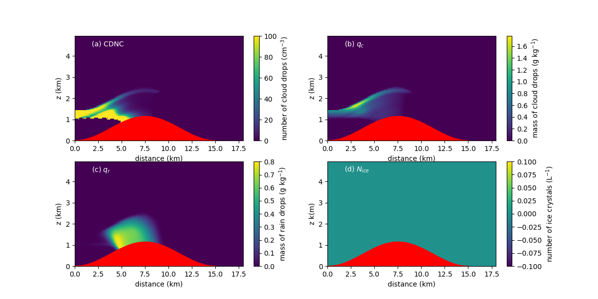

This page describes a practical exercise for the Virtual Tenerife Field Trip to aid in the understanding of the distribution of precipitation over the Island. Precipitation and the availability of water has a strong impact on Ecology over the island, as you will see throughout the week. The model used is a single column model (SCM), which models processes in a 1-dimensional column of air. At every level in the vertical the model calculates the evolution of cloud microphysical processes, such as:
Go to this web-page (password protected / link opens in new tab). You may want to arrange your browser windows so that you have this page and the tab that opens visible at the same time.
Running the model is straightforward, press the "Run Model" button and wait for around 30 seconds.
The model will run on a computer at the University of Manchester and then this computer will open the output file and make 4 plots, which are then displayed on the web page.
The idea for the practical is that you will run the model for different scenarios.
Once the simulation completes you should right click on the image to download it, save
it to your computer and make notes for later.

(a) shows the cloud droplet number concentration (CDNC); (b) shows the liquid water mixing ratio, \(q_c\); (c) shows the rain water mixing ratio, \(q_r\); (d) shows the ice crystal number concentration, \(N_{ice}\). The red patch shows the location of the mountain over which the air is lifted. Height of the mountain is around 1 km, similar to the Anaga.